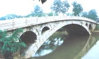
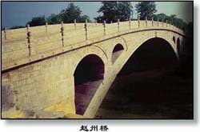
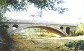
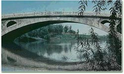
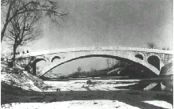

|  |
| 赵州桥简介 | 茅以升论赵州桥 | 作者李青简介 | 茅以升简介 | 赵州桥建筑三绝 |  |
赵州桥简介
赵州桥位于河北省赵县境内，因赵县古称赵州而得名（又称安济桥），赵州桥建于隋开皇年间（公元595－605年）。据唐中书令张嘉贞《安济桥铭》记载：“赵郡洨河石桥，隋匠李春之迹也”。距今已有近1400年历史，它不仅是我国而且也是世界上现存最早，保存最完整的巨大石拱桥，对世界后代的桥梁建筑有着十分深远的影响，特别是拱上加拱的“敞肩拱”的运用，更为世界桥梁史上的首创。在欧洲，最早的敞肩拱桥为法国在亚哥河上修造的安顿尼铁路石拱桥和在卢森堡修造的大石桥，但它比中国的赵州桥已晚了近1100多年。

赵州桥全长64.4米，拱顶宽9米，拱脚宽9.6米，跨径37.02米，拱矢7.23米。从整体看，它是一座单孔弧形石桥，由28道石拱券纵向并列砌筑而成，其建筑结构之奇特，自古有“奇巧固护，甲于天下”的美称，不仅有高度的科学性，而且具有我国独特的民族艺术风格，是我国古代建筑的伟大作品。1991年，赵州桥被美国土木工程师学会选定为世界第十二处“国际土木工程历史古迹”，是目前国内唯一一处。
茅以升论赵州桥
中国赵州桥（节选）
——茅以升
我国的石拱桥几乎到处都有。这些桥大小不一，形式多样，有许多是惊人的杰作。其中最著名的当推河北省赵县的赵州桥。
赵州桥横跨在洨河上，是世界著名的古代石拱桥，也是造成后一直使用到现在的最古的石桥。这座桥修建于公元605年左右，到现在已经1300多年了，还保持着原来的雄姿。到解放的时候，桥身有些残损了，在人民政府的领导下，经过彻底整修，这座石桥又恢复了青春。
赵州桥非常雄伟，全长50.82米，两端宽9.6米，中部略窄，宽9米。桥的设计完全合乎科学原理，施工技术更是巧妙绝伦。唐朝的张嘉贞说它“制造奇特，人不知其所以为”。

这座桥的特点是：
（一）全桥只有一个大拱，长达37.4米，在当时可算是世界上最长的石拱。桥洞不是普通半圆形，而是像一张弓，因而大拱上面的道路没有陡坡，便于车马上下。
（二）大拱的两肩上，各有两个小拱。这个创造性的设计，不但节约了石料，减轻了桥身的重量，而且在河水暴涨的时候，还可以增加桥洞的过水量，减轻洪水对桥身的冲击。同时，拱上加拱，桥身也更美观。
（三）大拱由28道拱圈拼成，就像这么多同样形状的弓合拢在一起，做成一个弧形的桥洞。每道拱圈都能独立支撑上面的重量，一道坏了，其他各道不致受到影响。
（四）全桥结构匀称，和四周配合得十分和谐；就连桥上的石栏石板也雕刻得古朴美观。唐朝的张拙说，远望这座桥就像“初月出云，长虹饮润”。赵州桥高度的技术水平和不朽的艺术价值，充分显示了我国劳动人民的智慧和力量。桥的主要设计者李春就是一位杰出的工匠，在桥头的碑文里还刻着他的名字。
李青简介
隋代造桥匠师。生平不详。隋开皇十五年至大业初（595～605）建造赵州桥（安济桥）。唐中书令张嘉贞著《安济桥铭》中记有：“赵州蛟河石桥，隋匠李春之迹也，制造奇特，人不知其所以为。”
茅以升简介
茅以升是我国著名的桥梁学家、教育家、社会活动家。他主持设计的钱塘江大桥，是我国第一座由中国人自己设计建造的铁路公路两用桥；他还参加了新中国第一座现代化的大桥－－武汉长江大桥的建造。
茅以升早年留学美国，其博士论文《框架结构的次应力》的科学创见，被称为“茅氏定律”。１９２１年，他回到祖国怀抱。三十年代，茅以升在钱塘江大桥工程技术上的成就曾令国外同行对中国的桥梁建筑工程师刮目相看。五十年代，在武汉长江大桥建设过程中，茅以升担任由２０多位中外专家组成的技术顾问委员会的主任委员，解决了武汉长江大桥建设中的１４个难题。１９５９年，在首都“十大建筑”的建设中，茅以升担任人民大会堂结构审查组组长，为这个历史性的重大建筑贡献了自己的技术、经验和智慧。他是中国近代桥梁工程学的重要奠基人。
作为一名教育家，茅以升在教育界工作的２０余年中当过５所学校的教授、两个大学的校长、两个学院的院长。他积极倡导科普教育，编写了《桥话》、《中国石拱桥》等大量的科普文章。
赵州桥建筑三绝
学完《赵州桥》这一课，小朋友一定会问：“赵州桥为什么经历了1300多年仍然不塌？”这除了党和政府对它重视和保护外，还在于它在建造上有三个绝处。
一是“券”小于半圆。我国习惯上把弧形的桥洞、门洞之类的建筑叫做“券”。一般石桥的券，大都是半圆形。但赵州桥跨度很大，从这一头到那一头有37.04米。如果把券修成半圆形，那桥洞就要高1852米。这样车马行人过桥，就好比越过一座小山，非常费劲。赵州桥的券是小于半圆的一段弧，这既减低了桥的高度，减少了修桥的石料与人工，又使桥体非常美观，很像天上的长虹。
二是“撞”空而不实。券的两肩叫“撞”。一般石桥的撞都用石料砌实，但赵州桥的撞没有砌实，而是在券的两肩各砌一两个弧形的小券。这样桥体增加了四个小券，大约节省了一百八十立方米石料，使桥的重量减轻了大约500吨。而且，当洨河涨水时，一部分水可以从小券往下流，既可以使水流畅通，又减少了洪水对桥的冲击，保证了桥的安全。
三是洞砌并列式。石桥的洞一般有两种砌法。一种叫“纵联式”，像砌墙一样，一层一层住上砌，各层石块相互交错。这种砌法砌成的桥洞是一个整体，比较牢固。一种砌法叫“并列式”，并排砌成许多道窄券，合成一个整券。赵州桥的建造采用的是并列式，它用二十八道小券并列成9.6米宽的大券。可是用并列式砌，各道窄券的石块间没有相互联系，不如纵列式坚固。为了弥补这个缺点，建造赵州桥时，在各道窄券的石块之间加了铁钉，使它们连成了整体。用并列式修造的窄券，即使坏了一个，也不会牵动全局，修补起来容易，而且在修桥时也不影响桥上交通。